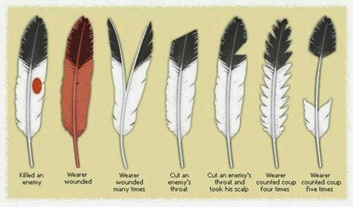

N8tive Awareness is here to talk to and give advice to Native Americans whom feel like they are left out of society. We also inform people about the Native American culture and virtures.
Down below is one of the most sacred items in the Native american culture;fethers. The feathers are either from a Hawk or an Eagle. Feathers are used during ceremonies by an elder. Dropping a feather is a bad thing to do because it is always supposed to stay up in the air fanning something becasue that's what a bird did. The bird is still living in the feather so we always have to treat it with respect.
